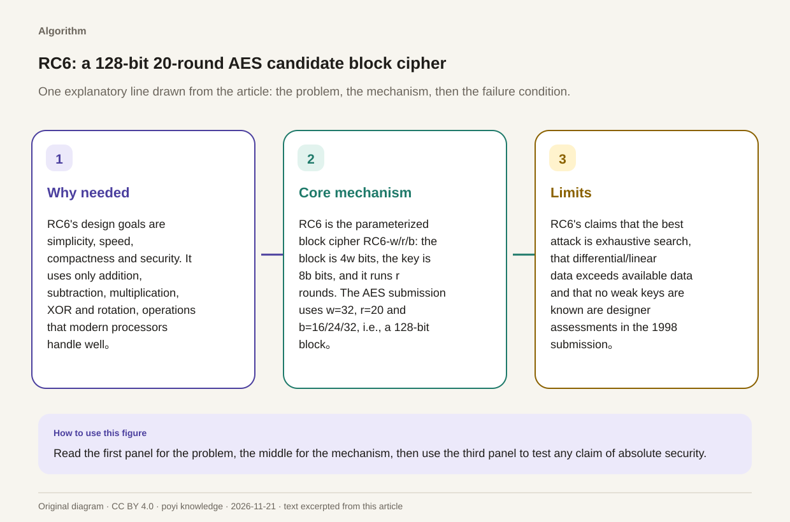
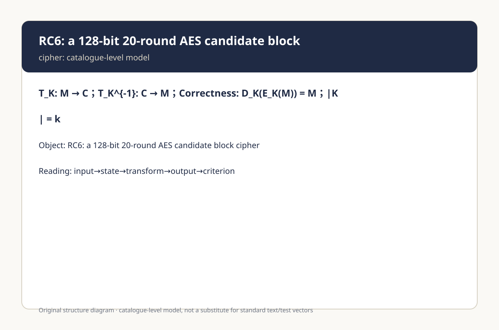

Principles
Algorithm: RC6 (RC6 分组密码). RC6 is the parameterized block cipher RC6-w/r/b: the block is 4w bits, the key is 8b bits, and it runs r rounds. The AES submission uses w=32, r=20 and b=16/24/32, i.e., a 128-bit block, 128/192/256-bit keys and 20 rounds. The 128-bit block is split into four 32-bit registers A, B, C and D. Encryption performs two prewhitening steps, twenty rounds and two postwhitening steps:
B = B + S[0]
D = D + S[1]
for i = 1..20:
t = (B * (2B + 1)) <<< 5
u = (D * (2D + 1)) <<< 5
A = ((A XOR t) <<< u) + S[2i]
C = ((C XOR u) <<< t) + S[2i+1]
(A, B, C, D) = (B, C, D, A)
A = A + S[42]
C = C + S[43]
Multiplication and addition are modulo 2^32, <<< is a 32-bit left rotation, and the rotation amounts use the low five bits. Each round derives t and u from B and D, uses them to rotate A and C and add round keys, then rotates the four registers left by one position. Decryption inverts the process:
C = C - S[43]
A = A - S[42]
for i = 20..1:
(A, B, C, D) = (D, A, B, C)
u = (D * (2D + 1)) <<< 5
t = (B * (2B + 1)) <<< 5
C = ((C - S[2i+1]) >>> t) XOR u
A = ((A - S[2i]) >>> u) XOR t
B = B - S[0]
D = D - S[1]
The key schedule loads the user key little-endian into c 32-bit words L and generates 2r+4=44 S words:
S[0] = P = 0xB7E15163
S[i] = S[i-1] + Q // Q = 0x9E3779B9
A = B = i = j = 0
for s = 1..3*max(c, 2r+4):
A = S[i] = (S[i] + A + B) <<< 3
B = L[j] = (L[j] + A + B) <<< ((A + B) mod 32)
i = (i + 1) mod (2r+4)
j = (j + 1) mod c
The AES version has c=4/6/8 and 2r+4=44, hence 132 mixing steps. P and Q are derived from the mathematical constants e and the golden ratio. The key bytes use the same order as the data: the first key byte enters the least significant byte of L[0], and later bytes fill the following bytes. RC6's byte order is little-endian: the first plaintext byte goes into the least significant byte of A, and the last plaintext byte into the most significant byte of D. Parsing the 128-bit block big-endian produces a completely different result. This article's implementation explicitly loads four 32-bit registers little-endian and writes them back in the same order.

Why it matters
RC6's design goals are simplicity, speed, compactness and security. It uses only addition, subtraction, multiplication, XOR and rotation, operations that modern processors handle well, so it suits software implementations; the AES submission uses a 128-bit block, 20 rounds and 128/192/256-bit keys.
The RC6 submission's Section 6 summarizes that the best attack appears to be exhaustive key search, that the data required for differential and linear cryptanalysis exceeds the available plaintext, and that no weak keys are known. These are the 1998 designers' assessments, not formal proofs against every attack model.
RC6 was submitted as an AES candidate in 1998, with the AES version using a 128-bit block and 20 rounds. A 2018 IETF draft says RC6 was one of the AES finalists, that the related patents have expired, and that the RC6 name remains a trademark.
Applications
The RC6 submission's appendix gives six vectors covering 128/192/256-bit keys and zero/non-zero plaintexts:
K = 00000000000000000000000000000000
M = 00000000000000000000000000000000
C = 8FC3A53656B1F778C129DF4E9848A41E
K = 0123456789ABCDEF0112233445566778
M = 02132435465768798A9BACBDCEDFE0F1
C = 524E192F4715C6231F51F6367EA43F18
K = 000000000000000000000000000000000000000000000000
M = 00000000000000000000000000000000
C = 6CD61BCB190B30384E8A3F168690AE82
K = 0123456789ABCDEF0112233445566778899AABBCCDDEEFF0
M = 02132435465768798A9BACBDCEDFE0F1
C = 688329D019E505041E52E92AF95291D4
K = 0000000000000000000000000000000000000000000000000000000000000000
M = 00000000000000000000000000000000
C = 8F5FBD0510D15FA893FA3FDA6E857EC2
K = 0123456789ABCDEF0112233445566778899AABBCCDDEEFF01032547698BADCFE
M = 02132435465768798A9BACBDCEDFE0F1
C = C8241816F0D7E48920AD16A1674E5D48
The April 2018 IETF draft draft-krovetz-rc6-rc5-vectors-00 also gives an independent RC6-32/20/16 vector: the key and plaintext are both 000102030405060708090A0B0C0D0E0F, and the ciphertext is 3A96F9C7F6755CFE46F00E3DCD5D2A3C. It cross-checks the six submission vectors.
Using the submission key schedule, this article's implementation computes for the 128-bit all-zero key S[0..3]=2A66311C, 9B17852D, 8108B207, 39D14185 and S[42..43]=05B4016A, 4B38AC83. These intermediates are not listed by the submission; they are computed from P, Q and the mixing rule and indirectly verified by the six vectors.

Limits & attacks
RC6's claims that the best attack is exhaustive search, that differential/linear data exceeds available data and that no weak keys are known are designer assessments in the 1998 submission, not formal proofs against every attack model, and they do not guarantee that no better analysis will appear. This article does not expand them into an absolute security claim, and it does not cite unverified attack papers to claim that RC6 has been broken.
The submission's Section 6 says RC6 can be arranged so that encryption/decryption time is data-independent, resisting some timing attacks. This is an implementation recommendation and does not guarantee constant-time behaviour for every processor, compiler and implementation; this article's teaching code is also not constant-time.
RC6's deployment position needs to be stated carefully: it was submitted to AES in 1998, and the 2018 IETF draft says the related patents have expired while the name remains a trademark; the final AES standard is FIPS 197, published by NIST on 26 November 2001, and RC6 did not become AES. Treating an AES candidate as the AES standard is inaccurate.
At the implementation level, this article's teaching code performs 32-bit multiplications and rotations and is not constant-time; caches and timing may leak key-dependent access patterns. It does not generate keys and implements no mode of operation, IV management, padding, integrity protection or side-channel defence, so it must not be used to protect real data. RC6 defines only a block cipher; the protocol layer must handle those matters.
History
The RC6 submission is version 1.1 (20 August 1998), attributed to R.L. Rivest, M.J.B. Robshaw, R. Sidney and Y.L. Yin, and was submitted as an AES candidate. The AES version uses a 128-bit block, 128/192/256-bit keys and 20 rounds.
The April 2018 IETF draft draft-krovetz-rc6-rc5-vectors-00 says RC6 was one of the AES finalists, that the related patents have expired, and that the RC6 name remains a trademark. It supplies multi-parameter RC6/RC5 test vectors, and this article uses its RC6-32/20/16 vector as an independent cross-check.
This article's RC6 entity is the 128-bit-block, 20-round AES candidate only; RC5 is a different parameterized block cipher and AES is the final FIPS 197 standard (published by NIST on 26 November 2001), neither an alias nor an entity completed by this article.
Worked example & verification
Worked example
Take one published or standard test vector, record the input, the ordered steps and the byte-exact output, then compare with an independent implementation. Where no citable numeric vector is available, the entry records only structural steps and does not invent an output.
References
- Wikipedia search entry for RC6 分组密码. https://zh.wikipedia.org/w/index.php?search=RC6%20%E5%88%86%E7%BB%84%E5%AF%86%E7%A0%81
- Handbook of Applied Cryptography (Menezes, van Oorschot, Vanstone). https://www.cacr.math.uwaterloo.ca/hac/